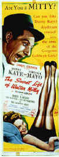
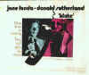
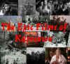

Severe Jump Cut Disorder or The Descent Into A Snake Pit of Slithering Film Strips
By Stu Kobak
Just because it started on
the tennis court doesn't necessarily mean it had anything to do with tennis. I’m talking about
this problem I have. Severe Jump Cut Disorder. It’s not an airborne disease like the virus in Outbreak,
but still, beware, it may be catching. Katharine Hepburn is not a bad athlete, but there is no way
that her strokes in Pat and Mike did anything to inspire her vision to come
between me and my own ball toss. It did, though. I mean, tennis really hasn't had that much play in
the movies anyway. Farley Granger hit some mean stokes in Strangers on a Train, but tennis
was purely incidental to the Hitchcock perversity play. Of course it wasn't Farley Granger hitting
the balls anyway. The tennis scenes in that movie were done with excellent style and certainly
provided the greatest amount of tension prior to the institution of the tie-break rule. The most
recent movie tennis strokes I recall were a simply embarrassing exchange between Robert Downey, Jr.
and Kevin Kline in Chaplin. It certainly was hard to believe that those two
famous players had anything in common with the court racket. The most ludicrous film tennis episode
had to be when Richard Pryor suffers multiple racket indignities losing in the most ignoble fashion
to a thoroughly abrasive Bill Cosby in Neil Simon's California Suite. It's
hard to imagine a worse tennis vision than all those balls blazing by Pryor like machine gun
tracers mowing down his manhood. That was probably the worst episode in that film to boot.
Sorry. It was just a short attack. You
see, the unnamed disease can even impose itself on my writing. I set out to simply recount my tale
of woe which began on the tennis court and before you can Jack Kramer I've digressed into a set of
tennis film references before tossing up the service ball of original intent. I've become a
progressive digressive. Thank god Freud isn't out on laser disc yet
because I might be tempted to glean some worthy pointers from the bard of mental illness. But
Montgomery Clift in that awful beard. Was Freud hiding behind something. Is
he hiding behind me?
But then, remember,
I only said it started on the tennis court. I swung my tennis racket to intercept a marauding
mosquito that came buzz bombing at me prior to my address of the little yellow ball for serve. So,
like any god-fearing, red-blooded man--too much blood, but not enough to share with that humming
vampire insect--I took my best shot at the insect, not the ball. Well, this Dragonslayer,
with one fell swipe of the racket (oversized, of course), felled that menacing miniature beast.
Before I could toss the ball again for serve, I was invaded by a pestilence of a different order,
created from an overload of celluloid intake. My mind did a jump-cut with the demise of the
mosquito to a scene from the movie Red Sun when Toshiro Mifune teaches
Charles Bronson the true meaning of great bladesmanship by trimming the wings off a mosquito with
the most miraculous flicks of his samurai sword. This was not a very good movie despite an
appealing cast and only a severe state of dementia could have forced it to erupt into my
conscientiousness from the mass of movies stored in my overloaded mental database. Red
Sun is not available on laser disc but a pretty poor DVD has been issued. Watch at
your own risk.
Severe Jump Cut Disorder can raise up and dominate
me at any moment with little or no warning. Unlike Walter Mitty, my bouts of fantasy do not include
images of myself playing out scenes in period costume. Danny Kaye stars as the title character in The Secret Life of Walter Mitty.


You might take this as all very innocent and benign,
but there are perils beyond the obvious. Driving can be a total disaster. An errant glimpse while
treading traffic on the Long Island Expressway can lead to anything. Take the bubble over there,
for instance, the one enclosing those tennis courts. Its night time glow catches my eye and I'm off
on a trip to Silent Running, a sci-fi flick starring Bruce Dern as an outer
space gardener. That was one of his most normal roles too. Running Man, Man on a
Tightrope, Trapeze, Man on the Flying Trapeze, It Happened One Night:
slowly sucked from reality, ensnared in web of criss-crossing sprocketed strands on the verge of
somehow progressing to the Midtown Tunnel. 
There was a time that my only distraction while driving to work each
morning was The New York Times. I used to be able to get through the entire paper during my thirty
mile drive. I guess Things Change. My eyes certainly have. I can hardly see
the Times sitting in my easy chair, much less read the thing while doing my imitation of driving. I
wasn't always farsighted and in fact I had great night vision. You can't have everything. At least
my insurance premium went down when I reported to them that I no longer read the newspaper while
driving.
Sitting in a garrulous
restaurant amidst the delightful dinner banter at my table, any stray conversation from the
Manhattan mayhem might intrude on my consciousness and set off another bout of Severe Jump Cut
Disorder. The word "human" floats by and I pivot my head to catch a man with prominent
uppers imbedded in a blood rare lamb chop. Robin Williams plays a cave man in Being
Human. After his family is abducted by a tribe of marauders I can picture a scene
(that isn't in the movie) of a forlorn Williams, boar chop in hand, leaning over a fire of dancing
flames, boar blood flowing down the sides of his mouth meeting with a stream of tears in the forest
of his beard. Blood's was on everyone's mind when the bombastic and bathetic Interview
With A Vampire opened. Is it my imagination or are patrons staring greedily at fellow
diners? Are those eye teeth growing? Will the vampire inherit the earth? More likely in every
fashionable eating palace diners are counting the days until the proposed new Titanic
is built and they can sail on the most luxurious ship in the world. Hell, if James Cameron really
had foresight, he would have built a full scale Titanic for the film.
Problem is, as devoted to detail as the man is, he would have sunk it despite the protests of
studio execs. At this point I can't keep my mind on food and drink. The movies are trying to take
me over. It's like some grade X horror movie. Which reminds me, The Man from Planet X.....Thank
god, the waiter spilled a glass of wine on my lap. I never drink.....wine.
Once, while touring the Duke University
campus with my son, there's a girl on the tour tour with her mother from the same Long Island high
as my son. The daughter's name is Bree. "What a lovely name," is my response. But the
name catches me in the trap of another episode of mind over reality. All I can see is Jane Fonda
being stalked by madman Charles Cioffi between the racks of clothing at Goldman's factory.
All this new media neurosis relates
closely to free association. Amazing, you say. Bingo! Off we go! The Amazing Dr.
Clitterhouse starring Edward G. Robinson. Zip to Dr. Erhlich's Magic Bullet,
another Robinson vehicle via the MGM bio machine (Neither of these is as yet on laser or DVD.)
Everybody does it. Birds do it. Bees do it. Even laserphiles do it. Free association On a limited
scale it's but a minor distraction and a far cry from Severe Jump-Cut Disorder. After all, just
because you free associate it doesn't mean you go off the deep end, slipping into a mental blackout
of the present. But watch out if the symptoms lead to a fall to the very bottom of The Snake
Pit. That's when it doesn't stop at the magic bullet but goes on to A Bullet for
Joey, Bite the Bullet, Love at First Bite, George Hamilton, Linda Hamilton, Terminator
. It starts out free and turns nasty, an uncontrollable string of related inconsequential images
forming so rapidly that they prevent reasonable termination. Nothing in this world is likely to be
free. So much for free association.
What's the plural of "all's well
that ends well." Easy, right. It's "all's well that ends Welles." Sorry about that,
my final impulse had just A Touch of Evil. Can you imagine Welles
strangling Akim Tamiroff with a convenient strand of film that was cut from The
Magnificent Ambersons. Before I succumb to the continued poison of Severe Jump Cut
Disorder, here is a look at a few of the discs floating in the universe of silver Frisbees in the
infinite void between my ears. Here’s a look at some of the films based on symptoms of my
cinemanical disease.


Selections from the feature archive include articles on Akira
Kurosawa, Frank Darabont,
Blonde
Bimbos, Hollywood Street Gangs,
or Vietnam:
The Hollywood Pariah, and many more....

During World War II, Hollywood pumped out war movies one after the other. Vietnam was was another
story. As far as Hollywood was concerned it was a pariah.

The Movie Poster Archive includes extensive poster images from the films of stars like Susan Hayward, Kirk Douglas, Katharine Hepburn and many more. Our featured star is James Mason

Click on the DVD MIA symbol for
profiles of DVDs missing in action.
Add films to the DVD MIA Master List by filling out
a simple form. Click Here


DVDPlanet is the DVD
incarnation of legendary laser retailer Ken Crane's. Deep discounts and serious service.
 Direct from the corridors of the Home Theater Forum, Home
Theater Talk is the newest place on the Net to discuss everything home theater. Friendly atmosphere
and knowledgeable folks are the secret ingredients.
Direct from the corridors of the Home Theater Forum, Home
Theater Talk is the newest place on the Net to discuss everything home theater. Friendly atmosphere
and knowledgeable folks are the secret ingredients.
 Specializing
in the horror side of DVD, this site features interviews with masters of DVD horror and reviews of
discs.
Specializing
in the horror side of DVD, this site features interviews with masters of DVD horror and reviews of
discs.

Specializing in DVD reviews, DVD Authority boasts almost 400 reviews in an easy to use, elegant,
interface.
Umberto Passini Online

Vintage & Contemporary Film Poster Art. Umberto has developed a fine Internet
reputation as reliable and honest. Nice posters too!
Movie
Collector's World

The publication you can't do without if your interested in Movie Posters
Cinemedia is
the largest film and media directory with over 25,000 links.

Home to The American Society of Cinematographers. Includes features from
American Cinematographer Magazine and more...

DVD Deals may be the
best site for all you high-tech bargain hunters. This site helps you find coupons and cheap DVDs at
all the major online stores.

A vast reservoir of DVD information, reviews, the kitchen sink. Check
out their huge DVD database including reviews from many sites.

News, information, features about current films in theaters and in the
pipeline. Easy to use interface.

The official site for information about the great comic director. A treat for connoisseurs of
classic Hollywood madcap.

The
DVD Answer Man is a new site devoted to spreading the DVD gospel. Answers to
questions, reviews, links and more....

DVD links, information about Web specials, news, Site reviews.

Selections from the feature archive include articles on Akira Kurosawa,
Frank Darabont, Blonde Bimbos, Hollywood Street Gangs,
or Vietnam: The Hollywood Pariah,
and many more....
Click on the image above for as original view of Akira Kurosawa's work

Catch the Hollywood take on Blonde Bimbos by clicking on the
image above.

Movie Rage: Death in the Aisles
Everyone knows what it feels like to get angry at the
movies these days. Here's a humorous but not so delightful view of big screen misery.